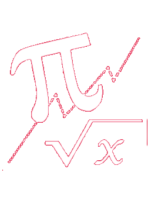

<h1 class="mat-display-1" style="margin-top: 20px; margin-bottom: 8px;">
  ¡Bienvenido Profesor!
</h1>
<h2 class="mat-h2">Selecciona una asignatura para comenzar.</h2>
<mat-grid-list cols="2" rowHeight="3:1">
  <mat-grid-tile
    style="background-color: #883f80;"
    [routerLink]="['prolengua']"
  >
    Lengua castellana y Literatura
    
  </mat-grid-tile>
  <mat-grid-tile style="background-color: red;">
    Matematicas
    
  </mat-grid-tile>
  <mat-grid-tile style="background-color: #66ccff;">
    Química
    
  </mat-grid-tile>
  <mat-grid-tile style="background-color: #ff9933;">
    Historia
    
  </mat-grid-tile>
  <mat-grid-tile style="background-color: #6666ff;">
    Tecnología
    
  </mat-grid-tile>
</mat-grid-list>
